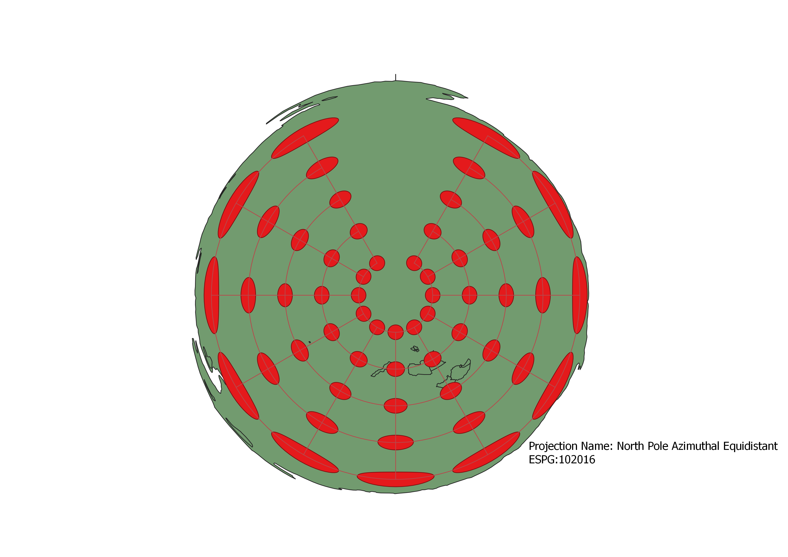
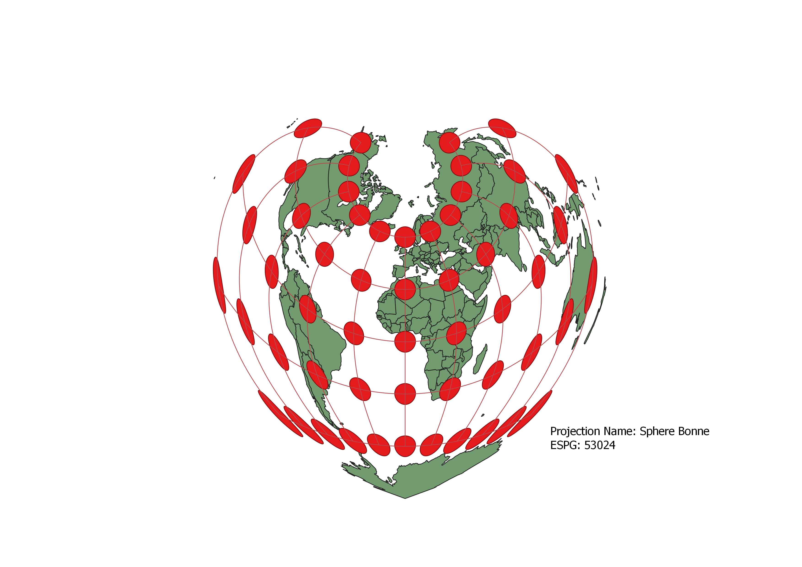

HW 3
I used the Inicatrix Plug-in on QGIS to place the caps on the map. I could then change the projection by clicking on a variety of different ones offered under the CRS (Coordinate Reference System) tab under the Project Properties tab in QGIS.
Pseudo-Mercator Projection
Some observations

Sphere Winkel
Some observations

World Projection Equal Area
Some observations

World Equidistant Conic
Some observations

North Pole Azimuthal Equidistant
Some observations

Sphere Azimuthal Equidistant
Some observations

Sphere Bonne
Some observations

Now, you should add the following projections on your own:
EPSG: 3857, 53018, 54034, 54027, 102016, and two additional projections that you choose.
Data used for this project
Download Natrual Earth 1:10m Cultural Vector